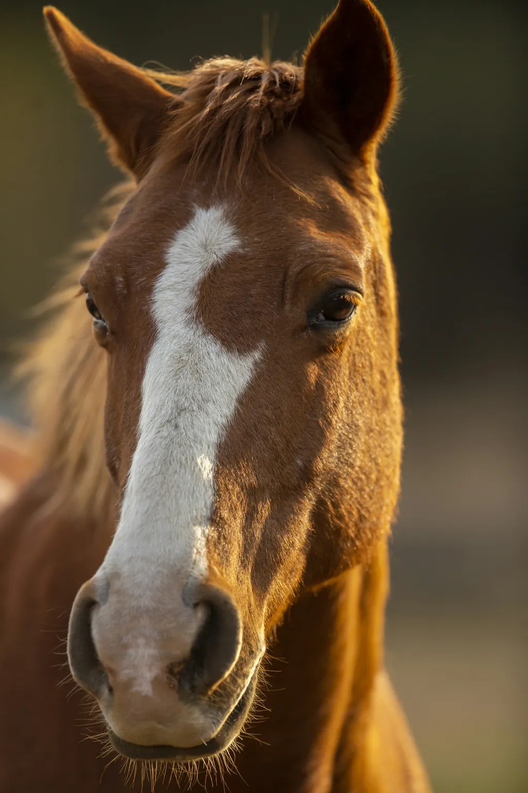

Florentine Chianti · at the gates of Florence
On horseback, on a journey towards harmony
Let the horse’s pace set the rhythm. Here time slows down, and finds you again.
Begin the journeyA moment for you
First of all, breathe.
Here time moves at the pace of a horse: slow, present, honest. Follow the circle for a few breaths, then carry on.
The project
The horse is not just a companion, but a guide.
Horses of Florence was born in the heart of the Florentine Chianti from a simple idea: time spent with a horse can become a way back to yourself.
A horse lives in the present and responds to who we truly are, not to who we would like to appear. Beside a horse, we learn to listen again: to our breath, our body, our emotions.
We bring together the beauty of the Florentine countryside, with its vineyards, olive groves and stone villages, and the depth of the bond with the animal. An invitation to pause, to feel and to find your balance again.

- Slow down
- Feel
- Find yourself
The journey
Towards harmony, one step at a time
Every experience is a path, on the ground and in the saddle, with two aims: your bond with your horse, and the way back to yourself.
-
01
Arrive
Leave the rush at the gate. The first step is to stop, look around and breathe the country air.
-
02
Listen
On the ground, beside the horse: watch, feel its breath, notice what it perceives. And what you perceive.
-
03
Meet
With our horses or with your own companion in life or at work, groundwork builds trust, listening and dialogue.

-
04
In the saddle
At walk, trot and canter, the balance of the body becomes inner balance. Never more than three riders, so the instructor can care for every detail.
-
05
Find yourself
Move past emotional blocks, regenerate, recharge. Go home lighter, with a new view of yourself.

For you
A welcome made to measure
We welcome no more than one to three riders at a time, so that the instructor can take care of even the smallest details. You choose the pace: we take care of the rest.
-
Individually or in small groups
One to three riders at a time: full attention, tailored to each person.
-
Our horses or your own
Work with the centre’s horses or with your own companion, who can be stabled at our partner centre.
-
A FISE centre
Our partner riding centre is affiliated with the Italian Equestrian Sports Federation (FISE), with qualified staff.
-
Stay in the Chianti
Stay at the B&B and live your holiday, or your free time, as a journey towards yourself.
- The three gaits. You should be confident at the three gaits: walk, trot and canter.
- Suitable clothing. Wear clothing suitable for riding: comfortable, safe and made for the saddle.
The land
The Chianti, at a slow pace
Around the B&B the countryside opens up into gravel roads, stone villages and age-old flavours. Choose your experiences.

Your stay
A home among the hills
To enjoy the experience without hurrying, you can stay at the B&B A spasso con Daisy · Chianti Home: two apartments in Barberino Tavarnelle, in the heart of the Chianti, a short walk from the Pesa stream.
A holiday, or even just a weekend, to live as a journey towards yourself.
Discover the B&B (opens in a new tab)Apparel
Wear our philosophy
A clothing line in the colours of the project, so you can carry a little of this harmony with you, even far from the stables.
- Blue
- White
- Silver

Contact
Don’t wait until tomorrow to take care of yourself, of each other.
Tell us who you are, whether you will come with your own horse and what you are looking for: we will reply to shape your experience together.
Write to us directly
- Email address [to be completed]
- Florentine Chianti, at the gates of Florence